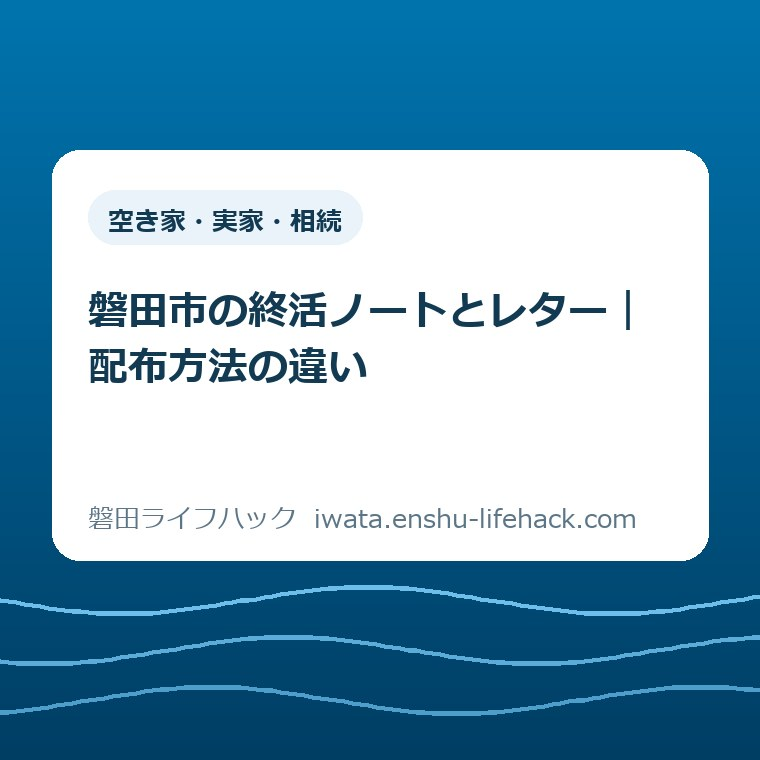
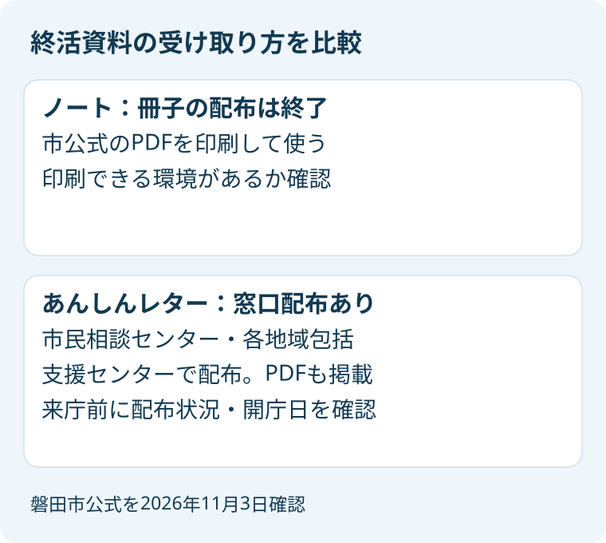
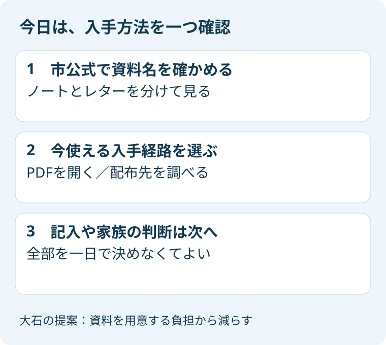

空き家・実家・相続
磐田市の終活ノートとレター｜配布方法の違い

この記事の要点
Q. 市の終活ノートは、どこでもらえるの？
A. 相談内容や必要な支援は個別条件で異なります。磐田市の終活ノートは冊子配布を終了し、PDFを印刷して利用します。あんしんレターは市民相談センターと各地域包括支援センターで配布され、PDFもあります。入手前に市公式の最新案内を確認してください。
資料探しだけでも、家族には一仕事になる
親の希望を聞き、実家にある書類を探し、仕事の合間に相談先を調べる。家族が情報を整理するには、目に見えない時間がかかります。「終活を始めよう」と言われても、まず何をどこでもらうのかで止まることがあります。その手間から考えたいと思います。
私は大石浩之（磐田市／不動産業）です。この記事では、磐田市の二つの終活資料を、入手方法から比べます。医療の希望を決める記事でも、相続手続きを進める記事でもありません。家族が使う紙を選ぶ前に、持ち帰れるものと印刷するものを整理します。
磐田市公式「終活サポート」は、2026年9月29日更新のページです。2026年11月3日に確認すると、ノートの冊子配布終了と、レターの配布先が別々に案内されています。ページの更新日を、そのまま冊子配布の終了日と読むことはできません。終了した日自体は、同ページに記載されていません。
少し意外なのは、ノートの冊子配布が終わっていても、終活の紙資料がすべてなくなったわけではないことです。ノートはPDFが残り、レターには窓口での配布案内があります。「もうもらえないらしい」で調べるのをやめず、資料の名前を分けると次の行動が見えてきます。
ノートはPDF、レターは窓口配布の案内がある
磐田市公式「終活サポート」では、エンディングノートは印刷して使う資料、あんしんレターは市民相談センターなどで配布する資料として確認できます。どちらも同じページからPDFへ進めます。最初に分けるのは、紙の受け取り方です。
市のページでは、見出しに「私と家族の安心ノート」、PDFのリンクに「私と家族のあんしんノート」初版という表記があります。この記事の「ノート」は、この市公式ページが掲載するエンディングノートを指します。似た名前の民間商品と取り違えないよう、掲載元を確かめてください。
| 比べる項目 | ノート | あんしんレター |
|---|---|---|
| 紙の配布 | 冊子での配布は終了 | 市民相談センター、各地域包括支援センターで配布 |
| 自宅などでの入手 | 市公式のPDFを印刷 | 市公式にPDF掲載あり |
| 公式の説明 | 人生を振り返り、目標や生きがいを見つける資料 | 残る人に希望や身の回りのことを伝える資料 |
| 確認したいこと | 自分でPDFを開き、印刷できるか | 希望する窓口で現在受け取れるか |
ノートのPDFが掲載されていることと、市役所で冊子を受け取れることは別です。印刷して使う案内を見落として本庁へ出向くと、移動だけが増えてしまいます。ノートを希望する場合は、まず公式のPDFが利用できるかを確かめるほうが、段取りを組みやすくなります。
レターについても、窓口配布の案内は在庫の保証ではありません。この記事では、各窓口の当日の在庫までは確認していません。印刷環境がなく、受け取りのためだけに出かける場合は、資料名を伝え、現在の配布状況を問い合わせると往復の負担を減らせます。

レターは、連絡先と希望を一緒に残す紙
市公式に掲載された「あんしんレター」のPDFは2ページです。金融機関や保険会社、生活上の契約先を記す欄と、家族へ伝えたい希望を記す欄があります。PDFのページ数と、窓口で受け取る紙の枚数や折り方は同じ意味ではないため、ここではPDFの構成として紹介します。
金融機関の欄には支店や電話番号を書けるようになっています。保険会社の欄もあり、家族が連絡の入り口を探すための情報を残せます。ただし、連絡先が書いてあれば、家族がすべての手続きを代わりにできる、という意味にはなりません。実際に必要な確認は、それぞれの契約先で異なります。
生活上の契約には、電力会社、固定電話会社、携帯電話会社、ガス会社、水道、新聞などの欄があります。実家の書類を一度に集めなくても、手元の請求書から分かる連絡先を確かめる用途が考えられます。これは私からの使い方の提案であり、市が記入順を指定しているわけではありません。
もう一方のページには、お墓、葬儀、遺言書の有無や保管場所などを記す欄があります。済んでいない相続手続きについて記す欄も確認できます。項目の存在と、その家族がすぐ決められることは別です。相続や遺言の個別判断は、この用紙だけで済ませず、必要な専門家へ確認してください。
医療に関する希望を書く欄もありますが、この記事では希望の内容を選ぶ助言はしません。話し合う準備を知りたい場合は、磐田市の人生会議と、親の希望を決めつけない備えを参照してください。資料の入手と医療の相談は、分けて考えられます。
紙を受け取る負担と、印刷する負担を比べる
終活資料を選ぶ際は、内容の多さだけでなく、手元に用意するまでの負担も比べられます。窓口に行くには移動と時間が要り、PDFを使うには表示や印刷の環境が要ります。どちらが楽かは、家族の住む場所や普段の生活によって変わります。
たとえば、市役所へ別の用事で行く予定がある家族なら、配布状況を確認してレターを受け取る段取りが考えられます。逆に、自宅でPDFを印刷できる家族なら、窓口へ出向かず資料を見られます。この二つは読者が選ぶ例であり、私が窓口で見聞きした実話ではありません。
印刷費用や、各窓口での取り置きの可否については、市公式の当該ページに具体的な案内がありません。この記事では無料印刷や郵送対応を約束しません。「インターネットにあるから誰でもすぐ使える」と考えると、印刷できない人の困りごとを置き去りにしてしまいます。
家族が遠方にいる場合も、親の代わりにすべてを埋める必要はないと私は考えます。紙の用意を手伝うことと、本人の希望を決めることは分けたいところです。資料を一緒に見て、本人が今話せる内容を聞く。その程度の関わりからでも始められます。
相続の相談先が必要になった場合は、司法書士と弁護士の相談を比べた記事で、相談内容の違いを整理できます。終活資料を選ぶ段階から、すべての問題に同じ窓口が答えると期待しないほうが、後の相談を具体的にできます。
良い点——入手経路と相談先が一つのページで分かる
磐田市の案内の良い点は、資料をダウンロードする道と、人に相談する道が同じページにあることです。用紙だけ渡されると、書けない項目の前で止まりがちです。相談先が併記されているため、資料を読みながら困りごとを言葉にする入り口を探せます。
市公式「終活サポート」は、終活おうえん窓口について、電話または面談で話を聞き、必要に応じて専門機関や担当部署を紹介すると説明しています。ノートの書き方や将来への不安も相談例に含まれます。財産の整理が完成してから相談する人だけを想定した説明にはなっていません。
また、レターの配布先として、各地域包括支援センターも挙がっています。本庁に行く方法だけでなく、普段の生活に近い相談先を調べる余地があります。ただし、地域包括支援センターで受けられる個別の相談内容まで、この配布案内だけで一律には判断できません。
ノートは冊子配布終了を明記しながら、PDFの利用方法を残しています。私は、終了の案内と代わりの入手経路を一緒に示す点を評価します。手元に古い紹介記事やチラシがあっても、現在のページへ戻ることで、無駄な来庁を避ける材料が得られるからです。
注文したい点——名称と受け取り方を先に見せてほしい
私が注文したい点は、似た名前の資料を、入手方法からすぐ選べる見せ方です。「安心ノート」「あんしんノート」「あんしんレター」と並ぶと、初めて探す家族には、別の資料なのか、表記だけの違いなのかが伝わりにくいと感じます。内容を読む前の迷いを減らしたいところです。
たとえば、公式ページの上部に「ノートはPDFを印刷」「レターは窓口配布とPDF」と並べるだけでも、次の行動を選びやすくなると私は考えます。これは一事業者としての見せ方への要望です。市がその変更を予定しているという事実は確認していません。
一方で、在庫をすべての窓口で常時公開してほしい、とまでは言い切れません。更新のために現場の手間が増える可能性もあるからです。私は、来庁前に何を問い合わせればよいかが、資料名とともに分かる案内を優先したいと考えます。
紙を増やせば負担が減るのか、PDFへ集約したほうが探しやすいのかは、私にも一つの答えがありません。だからこそ、どちらかを一律にすすめるより、家族が今使える入手経路を示すほうが実用的です。資料を選ぶために、読者が払う時間も数えたいと思います。
対案・結論——今日は入手方法を一つ確認する
今日できる一歩は、市公式ページを開き、ノートのPDFを使うか、レターの配布先を確認するか、一つ選ぶことです。この記事の目的は、終活を一日で終わらせることではありません。紙を用意する手前の迷いを減らし、家族が次に動ける状態にすることです。
ノートを選ぶなら、公式ページのPDFリンクを開き、文字や項目が読めるかを確かめます。印刷を誰かに頼む場合は、個人情報を書き込む前の空の資料を用意する段取りにできます。印刷のために家族全員の情報を先に集める必要はない、というのが私の提案です。
紙のレターを受け取りたいなら、配布先へ「私と家族のあんしんレターを受け取れますか」と尋ねる方法があります。ノートの冊子を探していると伝えると、別の資料の案内になる可能性があります。正式な資料名を一つ伝えるだけでも、問い合わせの行き違いを減らせます。
市民相談センターの電話番号は0538-37-4746です。終活おうえん窓口の相談対象は磐田市在住の方と案内されています。家族が市外にいる場合など、誰がどの形で相談できるか迷うときは、本人との関係と相談したい内容を伝え、利用の仕方を確認してください。
なお、2026年11月3日は文化の日です。市公式は終活おうえん窓口の定例相談日を「開庁日（月曜～金曜）」としています。火曜日というだけで本日の来庁をすすめることはできません。今日は公式情報を確かめ、電話や訪問は開庁日を確認してからにしてください。

手に入れた後は、保管場所を共有できる形にする
あんしんレターのPDFには、救急情報シートやお薬手帳と一緒に保管し、身近な人に保管場所を知らせる案内があります。何を書いたかだけでなく、必要な人がどこを探すかにも目を向けた資料です。用紙を手に入れた後の使い方として、確認しておきたい点です。
私からは、家族全員へ記入済み用紙の写真を一斉送信する前に、誰と何を共有するかを本人と相談することを提案します。金融機関や契約先、連絡したい人の情報が集まる紙だからです。保管場所を伝えることと、内容のすべてを広く配ることは同じではありません。
分からない項目については、私なら「未確認」と書いた別のメモを用意します。空欄を見た家族が「契約がない」と判断しないためです。市が指定する記入ルールではありませんが、調べ終わったことと、まだ聞けていないことを分けると、家族の二重作業を減らせます。
実家のことまで話題が広がったら、相続登記を扱う資料と、この終活資料を分けて置く方法もあります。相続登記と相続人申告登記の違いは別記事で整理しています。希望を残す紙を手に入れたことを、登記手続きの完了と混同しないでください。
市公式「空き家に関する相談会等」は、住まいの終活の最初に家族の話し合いを挙げています。家の相談へ進む場合は、空き家相談会に向けた家族の相談メモも使えます。本記事では申込期限の案内を重ねず、資料選びと相談準備の役割を分けます。
大石の視点——完成させるより、手が止まる理由を減らす
私は、終活資料を家族の宿題にしないほうがよいと考えます。すでに親の通院や実家の管理、仕事の調整をしている家族にとって、立派な冊子を渡されることが新たな負担になる場合もあるはずです。用紙を全部埋めることを、今日の成果にしなくてよいと思います。
不動産業を営む立場からの私の判断は、情報の量より、次に確かめる場所が分かることを優先する、というものです。ノートのPDFが開けた。レターを受け取れる窓口が分かった。その一つが確認できれば、家族が使える材料は増えています。これは体験談ではなく、私の考えです。
資料の使いやすさは、書式だけでは決まりません。誰が印刷するか、誰が受け取りに行くか、本人がどこまで話したいかが関わります。私自身、短い資料だけで足りるのかには迷いがあります。それでも、入手の段階で止まっている家族には、まず手元に用意する方法を一つ示したいと思います。
よくある質問
ノートは、もう手に入らないのですか？
磐田市公式ではノートの冊子配布は終了していますが、PDFを印刷して使う案内があります。資料そのものがなくなったわけではありません。紙のレターには別の配布案内があります。ノートを窓口でもらえると思って出かける前に、公式ページで資料名と入手方法を確かめてください。
あんしんレターはどこで受け取れますか？
市公式は、市民相談センターと各地域包括支援センターで配布すると案内しています。同じページにPDFも掲載されています。ただし、この記事では各窓口の在庫を確認していません。受け取りのために訪問する場合は、希望する窓口へ資料名を伝え、配布状況と開庁日を確認してください。
全部書いてから、終活の相談に行くのですか？
市公式の相談例には、何から始めてよいか分からないことや、ノートの書き方も含まれています。用紙の完成を待つより、困っている内容を一つ伝える方法があります。利用対象や対応できる相談は確認が必要です。個別の相続・遺言の判断は、案内された専門機関などに確かめてください。
配布方法や相談の案内は変わることがあります。今日は資料の入手経路を一つ確認するところまでで構いません。最後は必ず、磐田市公式「終活サポート」で最新の案内を確かめてください。
参考にした公式情報
- 磐田市「終活サポート」（2026年11月3日確認、ページ更新日2026年9月29日。ノートの配布終了、PDF利用、レター配布先、相談案内）
- 磐田市「私と家族のあんしんレター」PDF（2026年11月3日確認、全2ページ。記入欄と保管場所の共有案内）
- 磐田市「空き家に関する相談会等」（2026年11月3日確認。「住まいの終活 最初の三歩」の家族の話し合い）
2026年11月3日確認。市の窓口在庫と冊子配布終了日は未確認です。制度や対応は個別条件で変わり、相続・遺言などの個別判断は専門家に確認してください。最新情報は磐田市公式ページでご確認ください。